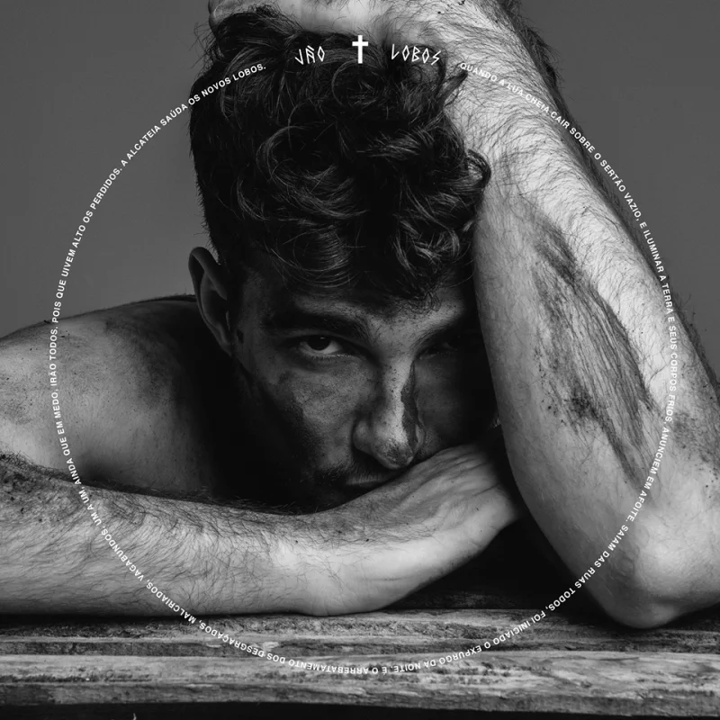

Lobos
O primeiro álbum de estúdio da carreira de Jão, vindo com uma grande variedade de estilos musicais. Seu elemento é a terra .
As suas faixas são:
- Vou Morrer Sozinho
- Me Beija Com Raiva
- Lindo Demais
- Imaturo
- Ainda te amo
- A rua
- Lobos
- Eu Quero Ser Como Você
- Aqui
- Monstros